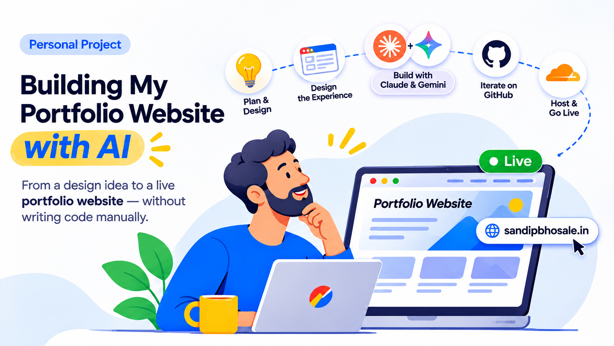

A personal project · AI-assisted development
I’ve spent years designing digital products. But ask me to write a line of HTML or CSS from scratch and, until recently, you’d have got a very confident blank stare. I understood how websites worked; I just hadn’t built one with code myself. So I decided to treat the challenge like any other product problem: understand the users, choose the right tools and build something that I could actually maintain.

The goal: a portfolio that works as hard as I do
I wanted to create a portfolio website that presented my work clearly and made it easy for HR teams and hiring managers to understand what I do, how I think and the problems I solve. More importantly, I didn’t want a website that became a digital museum: beautiful on launch day, then slowly collecting dust.
The challenge: no code, but plenty of curiosity
I had never written HTML or CSS by hand. I did, however, understand the building blocks of a digital experience: structure, hierarchy, components, behaviour and responsive layouts. The question was how to turn that knowledge into a working website without first disappearing into a six-month coding bootcamp.
My approach: use AI tools as my development partners and build a site that would be simple to customise, manage and grow.
Research: borrowing good ideas, not copying homework
Before opening a code editor, I explored portfolio websites from other product designers. I used Claude to review and benchmark different examples, identify useful patterns and organise the findings. I looked at how people presented case studies, structured their content and helped visitors find the information that matters.
The aim wasn’t to make another portfolio that looked like everyone else’s. It was to understand what worked, then shape an experience that felt like me.
The tool decision: no Figma this time
Since the whole point was to build the website with AI, I deliberately skipped Figma for the initial design. I started with Claude, which I had access to at the time, and used it to create the basic layout and generate the website files.
There was one important condition: my website shouldn’t become dependent on a single AI subscription. I asked Claude to make the files easy to manage so I could continue updating the site even after my access ended. It guided me through using GitHub to store and version the code, and Cloudflare to host the website and connect my domain, sandipbhosale.in, which I had registered with GoDaddy.
When my Claude access ran out, the project didn’t have to. I moved the next part of the journey to ChatGPT, connected it with GitHub and continued from there. A change of AI co-pilot, same destination.
Getting it live: from files to a real website
With the layout and files ready, I worked through the setup: domain, repository, hosting and the adjustments needed to get everything working together. There were plenty of small settings to figure out, but eventually the website was live at sandipbhosale.in.
That was a good milestone. But getting a website live was only level one. The real challenge was making sure I could keep it alive without turning every small update into a mini software project.
The ongoing workflow: a little help from AI, a little help from GitHub
I wanted updating my portfolio to feel as straightforward as discussing a design change. So I built a workflow around ChatGPT and GitHub:
- Talk it through. I explain the change or new idea to ChatGPT in plain language.
- Create the change. ChatGPT works on the website files and raises a GitHub pull request (PR) for review.
- Review and merge. I open the PR, check the proposed changes and merge it into the main branch when I’m happy.
- Publish. The merged code becomes the source for the next website deployment.
No need to remember which bracket goes where. I focus on what I want the experience to do; AI helps translate that into code, and GitHub gives me a reviewable record of the changes.
A portfolio update, from the metro? Absolutely.
Here’s my favourite part: I have both the ChatGPT and GitHub apps on my phone. If an idea strikes while I’m out — a new interaction, a content tweak or even a completely new case study — I can describe it to ChatGPT by typing or speaking.
ChatGPT can prepare the change and create a PR. I open the link, review it in the GitHub app and merge it when it’s ready. That means I can move an idea forward while sitting on the metro, instead of adding it to a to-do list and hoping Future Me remembers it.
One important detail: merging updates the repository. The website becomes live after the deployment step; with the current Cloudflare setup, I publish the updated site after the merge.
The outcome: less waiting, more making
I now have a live portfolio that I can continue to shape through conversation. I didn’t need to become a developer before I could build it. I needed to be clear about the experience, make informed decisions, review what AI produced and keep control of the result.
The biggest shift wasn’t that AI wrote the code. It was that the distance between having an idea and trying it out became much shorter. And that’s a pretty useful superpower for a product designer.
Role: Product Designer · AI-guided development
Focus: Portfolio strategy, benchmarking, UX and visual direction, AI-assisted coding, GitHub workflow, hosting and ongoing maintenance
Tools: Claude · ChatGPT · GitHub · Cloudflare · GoDaddy